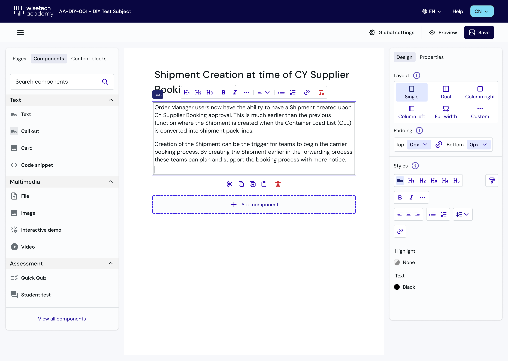
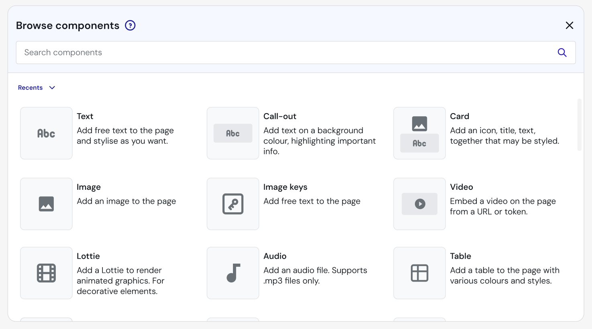
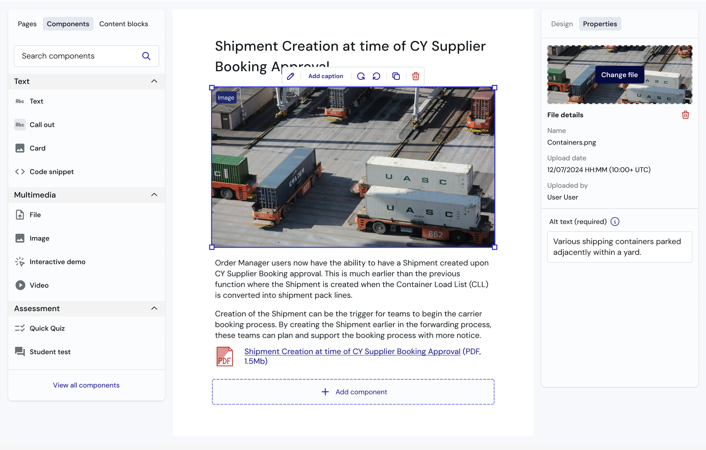
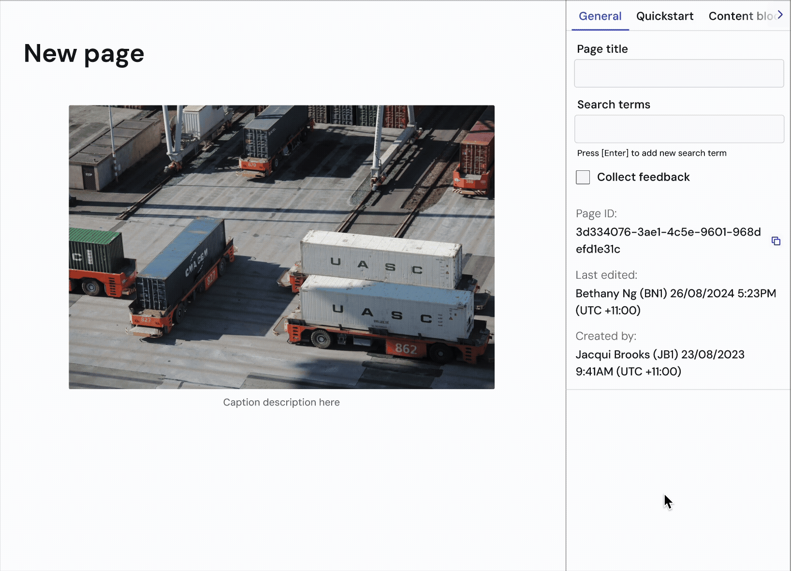
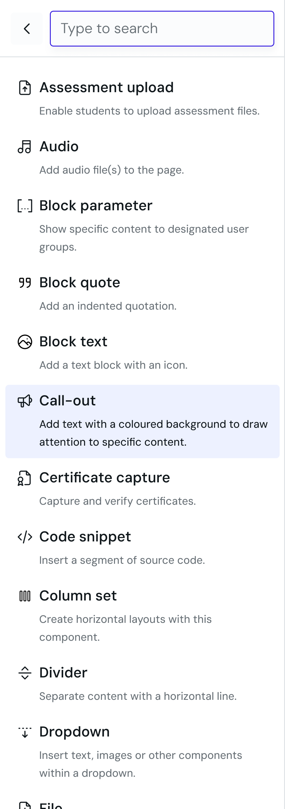
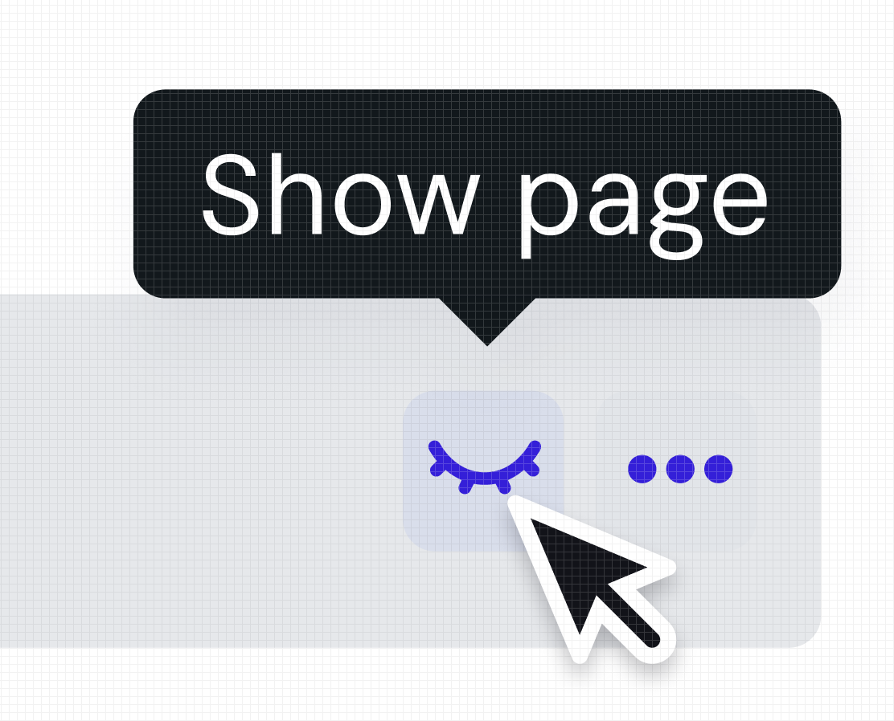

Modernising WTA's content authoring experience.
How might we redesign the course authoring experience so creators can build and edit content quickly without needing technical knowledge?
I conducted research and designed the new tool end-to-end alongside another designer, from research through handoff. We delivered a single tool that meets basic authoring expectations, and a PrimeVue component library that was introduced across the broader admin platform.
- The initial brief was to uplift the UX of the existing content creation platform.
- The tool had been worked around so extensively that the workarounds had become the workflow.
- The platform had become a hindrance for editors.
The interface treats the main editing canvas as a secondary priority.
To understand the current workflow better, we conducted the following activities:
- Platform audit of the existing tool
- Context setting interviews with 3 editors


- The canvas doesn't support editing widgets.
- As a result, workarounds were built (like going into the source code) to make simple changes.
Split panel layout for clearer hierarchy and editing priority
The existing interface buried the editing toolbar below page-level settings, treating the canvas as secondary to configuration.

Global widget search to reduce workarounds and duplicate content
Widget names were set by internal teams rather than how creators searched for them, leading to creators building workarounds for widgets that already existed.

WYSIWYG editing to lower the risk of previewing content
Previewing a course required making it live first, which was high risk and high effort.

Users are willing to adapt their workflow, but muscle memory occasionally gets in the way.
Users avoided terminology and iconography that felt foreign.
Publish and visibility were two different concepts handled in the same place.
Focus is given to the task at hand.
The right panel was dynamic, surfacing the relevant options for whatever was selected.

Descriptions and common search terms were added to the widget menu.
Global widget search required reindexing the database, which wasn't feasible.

Display settings were simplified.
Multiple levels of visibility were reduced to one, with hide and show kept at the page level and everything related to going live moved to the course level.

- Defined and implemented a new component library to be used in internal tools.
- Positive reception from 11 internal users at launch.
- 6 new widgets have been requested and integrated since launch, suggesting creators are working within the tool rather than around it.